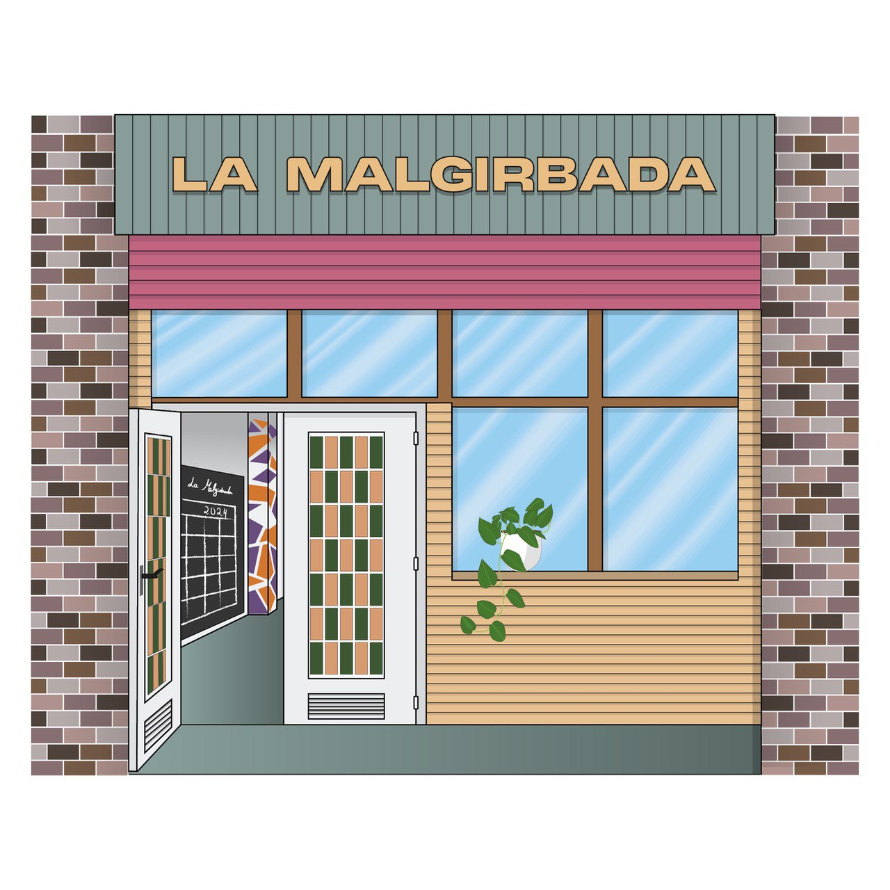

Fem més gran la comunitat de l’Ateneu Popular La Malgirbada
Arribem a les 150 sòcies a finals del juny del 2024
A les portes del 2n aniversari de l’ateneu popular La Malgirbada, estem contentes, però no conformes. Sentim que el feixisme, el patriarcat i el racisme cada cop són més forts, veiem l’immobilisme de l’Ajuntament i la passivitat enfront l’entrada de VOX o l’indiferència davant el genocidi que Israel està perpetrant cap al poble palestí.
És moment de fer-nos més grans per atendre a les necessitats del futur, pel que vindrà i per tot allò que ja és imparable. Com a ateneu popular que aplega desenes de persones i més de 10 col·lectius del moviment popular de la ciutat, sentim la responsabilitat de fer-ho bé, per guanyar.
Des del Goteo abans de l’obertura de l’ateneu, passant per les més de 100 persones que us vau fer sòcies abans d’haver obert, sou moltes les persones que heu aportat en molts sentits per fer crèixer l’ateneu, però la que ens dóna més seguretat és la figura de la sòcia.
Per què fer-se sòcia?
Ser sòcia és ajudar a enfortir l’ateneu fent una aportació mensual a un projecte de llarga durada a la ciutat. Es poden aportar 5, 10 o 15€ al mes, que es cobren a través d’una domiciliació trimestral.
Per què necessitem ser més?
A part dels motius que hem explicat, tenim ganes de tirar endavant alguns projectes:

Instal·lar wifi a l’espai per oferir connectivitat a les persones i col·lectius que en fan ús

Adquirir un equip de so que ens permeti sonoritzar xerrades, cinefòrums o espectacles de petit format
Adequar l’espai amb millores a les portes, parets, il·luminació i fontaneria
Millorar la comunicació de les activitats, tot fentnos més presents a la ciutat amb accions comunicatives originals
Tenir fons per afrontar les causes repressives que han vingut i que vindran, amb determinació per ser un front antifeixista a la ciutat
Fer més gran el rebost: disposar de material de cuina propi per poder organitzar esdeveniments de l'ateneu i els col·lectius que en formen part
Fer un mural gran a l'interior de l'ateneu en motiu de la celebració del 2n aniversari
Seguir treballant des de l'autogestió, des de la comunitat i sense dependre de l'Estat i dels seus tentacles